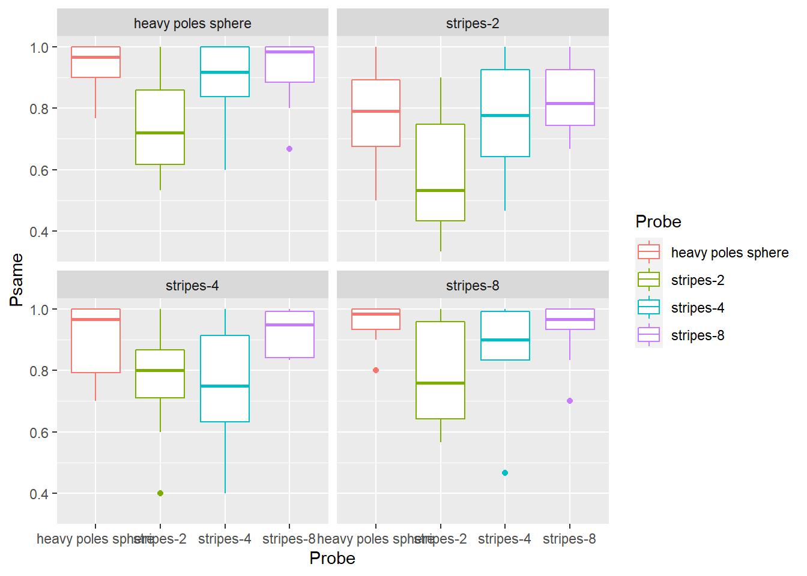
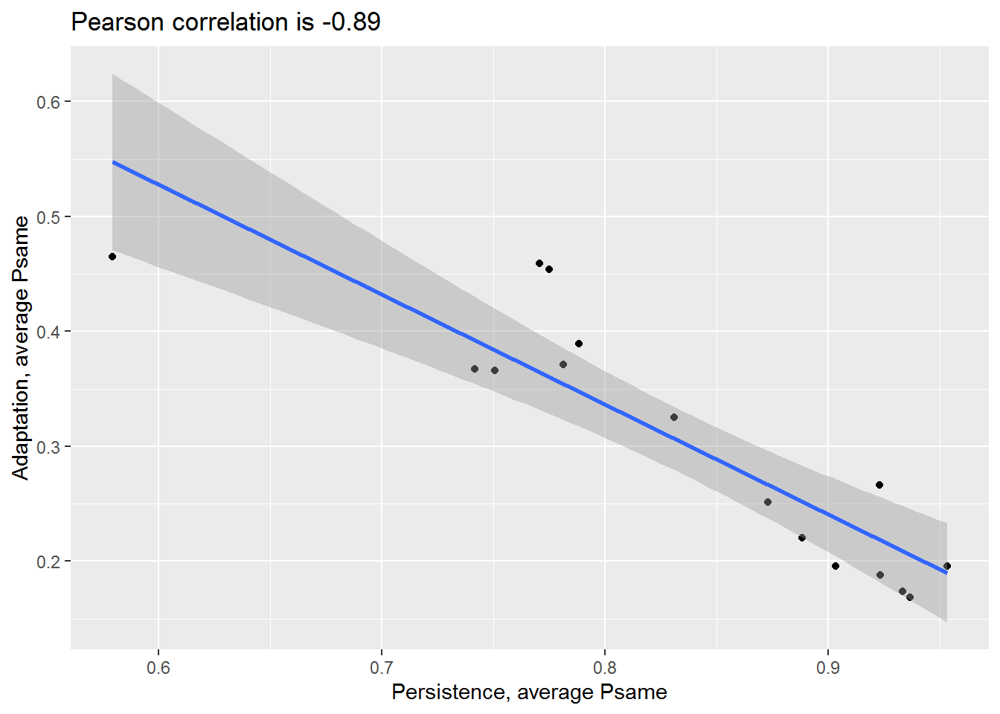

Seminar 8 Glueing and sprintfing
Let us practice more, utilizing knowledge and skill from previous seminars! Grab the exercise notebook and let’s get started.
8.1 Comparing effect between two studies
In the previous seminar, you analyzed how perceptual stability was influenced by change of object’s shape for very brief interruptions (50 ms). For those brief interval, your perception is determined primarily by neural persistence, a lingering neural activity of neurons that represented 3D rotation before the interruption. However, you can curtail it using a mask, another object rotating around orthogonal axis. In this case, perception dominated by neural fatigue (also known as habituation or adaptation) of previously active neurons. Here, the measurement is the same (but the an intervening mask) but the expectations about similarity of reports is opposite: The stronger is the influence of the previous object, the lower is the probability of the same direction of rotation report (a tired neuron should be overwhelmed by competition that codes for the opposite direction of rotation). Long story short, if same groups of neurons are involved in both neural persistence and neural fatigue, we except negative correlation, so that higher proportion of same reports in persistence lead to lower proportion for fatigue and vice versa.
Here is the outline of the analysis:
- Load and analyze persistence.csv. You can reuse your code from the previous seminar, however, I strongly recommend redoing it here from scratch. If it is easy, it won’t take much time. If it is not, you definitely need to practice more, so do it! Compute the following in a single sequence using piping and store results in a variable
persistence. The table must have only three columnsPrime,Probeand column for average proportion of same responses, and 16 rows (four primes × four probes).- read the data in a table.
- Compute a new variable
SameResponsewhich isTRUEwhenResponse1andResponse2match each other (in the experiment, that means that an object was rotating in the same direction before and after the intervention). - Convert
PrimeandProbeto factors and use labels “sphere” (for “heavy poles sphere”), “quad band” (for “stripes-8”), “dual band” (“stripes-4”), “single band” (for “stripes-2”). - For every combination of
Participant,PrimeandProbecompute proportion of same responses. - For every combination of
PrimeandProbecompute average proportion of same responses.
- Load and analyze bands-adaptation.csv. First, load the table and take a look at its contents or just open the file and text editor but not in Excel (the latter might change it, if you accidentally agree to save the file). Again, implement all steps in a single sequence using piping and store results in a variable
adaptation. The table must have only three columnsPrime,Probeand column for average proportion of same responses, and 16 rows (four primes × four probes).- Convert
PrimeandProbeto factors and use same labels as for persistence. So “sphere” (for “Sphere”), “quad band” (for “Quadro”), “dual band” (“Dual”), “single band” (for “Single”). - Compute proportion of same responses per
Participant,Prime, andProbeusing number of same responses (Nsame) and the total number of trials (Ntotal). - Compute average proportion of same responses per
PrimeandProbe.
- Convert
- Merge two tables by
PrimeandProbe, store results in a new variable (the name is up to you). Note that each table has column with average proportion of same responses. You probably used the same name for this variable for both columns (if not, do use the same name, likePavg). Joining functions are average of this possibility and use suffixes to differentiate which table the original column came from. By defaultssuffix = c(".x", ".y"), so that that columnPavgfrom the first (left) table will becomePavg.xand the other onePavg.y. We can do better thanc(".x", ".y")! Use suffix parameter but use meaningful suffixes. The table should have four columns and sixteen rows. - Plot average proportion of same responses for adaptation versus persistence. Use points for individual values and add linear regression line via
geom_smooth(). The final plot should look approximately like this:

Do exercise 1.
8.2 Gluing in correlation strength information.
Let us be more precise about the strength of the correlation between the two variables. First, compute it via cor function. Use function round to round it to just two decimal places. Then, use glue() (see below) to make the title look nice and put it as a title or subtitle of the plot via labs.
Function glue() lives in the package of the same name that you will need to import separately (it is part of the tidyverse but is not imported automatically). It makes it simple to “glue” values directly into a string. You simply surround the R code by wiggle brackets and the result of the code execution is glued in. If you use just a variable, its value will be glued-in.
answer <- 42
bad_answer <- 41
glue("The answer is {answer}, not {bad_answer}")## The answer is 42, not 41But, you can put any code inside, although, the more code you put, the harder it will be to read and understand it.
single_package_weight <- 1.2
glue("Ten packages weight {single_package_weight * 10} kg")## Ten packages weight 12 kgSo, compute the correlation, glue it into the text and put it as a title of the plot. 
Do exercise 2.
8.3 sprintf
Simplicity makes glue a great tool to insert values into, because there isn’t much more to know about. However, because it is so simple to use, it is not the most flexible way for formatting strings. Instead, you can use sprintf function that provides C-style string formatting (same as Python’s original string formatting).
The general function call is sprintf("string with formatting", value1, value2, value), where values are are inserted into the string. In "string with formatting", you specify where you want to put the value via % symbol that is followed by an optional formatting info and the required symbol that defines the type of the value. The type symbols are
sfor stringdfor an integerffor a float value using a “fixed point” decimal notationefor a float value usaing an exponential notation (e.g.,1e2).gfor an “optimally” printed float value, so that exponential notation is used for large values (e.g.,10e5instead of100000).
Here is an example of formatting a string using an integer:
sprintf("I had %d pancakes for breakfast", 10)## [1] "I had 10 pancakes for breakfast"You are not limited to a single value that you can put into a string. You can specify more locations via % but you must make sure that you pass the right number of values. Before running it, can you figure out which call will actually work (and what will be the output ) and which will produce an error?
sprintf("I had %d pancakes and either %d or %d stakes for dinner", 2)
sprintf("I had %d pancakes and %d stakes for dinner", 7, 10)
sprintf("I had %d pancakes and %d stakes for dinner", 1, 7, 10)Do exercise 3.
In case of real values you have two options: %f and %g. The latter uses scientific notation (e.g. 1e10 for 10000000000) to make a representation more compact. When formatting floating numbers, you can specify the number of decimal points to be displayed.
e <- 2.71828182845904523536028747135266249775724709369995
sprintf("Euler's number is roughly %.4f", e)## [1] "Euler's number is roughly 2.7183"Repeat exercise #2 but use sprintf() in place of glue().
::: {.infobox .practice}
Do exercise 4.
:::
8.4 Wrap up
That’s it for today! See you after the Christmas break!